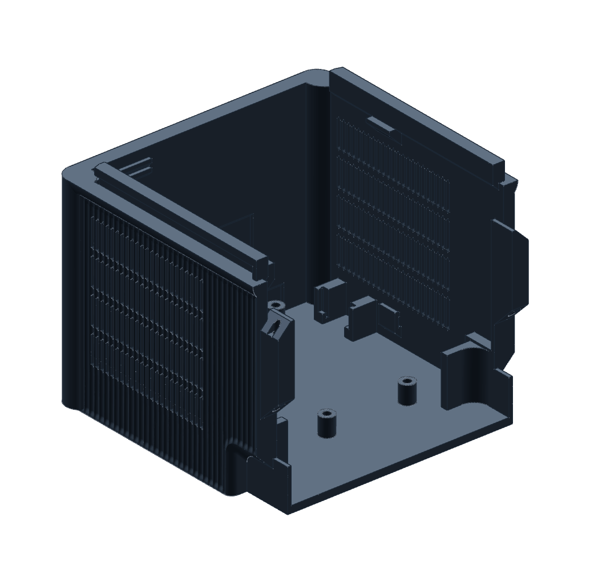
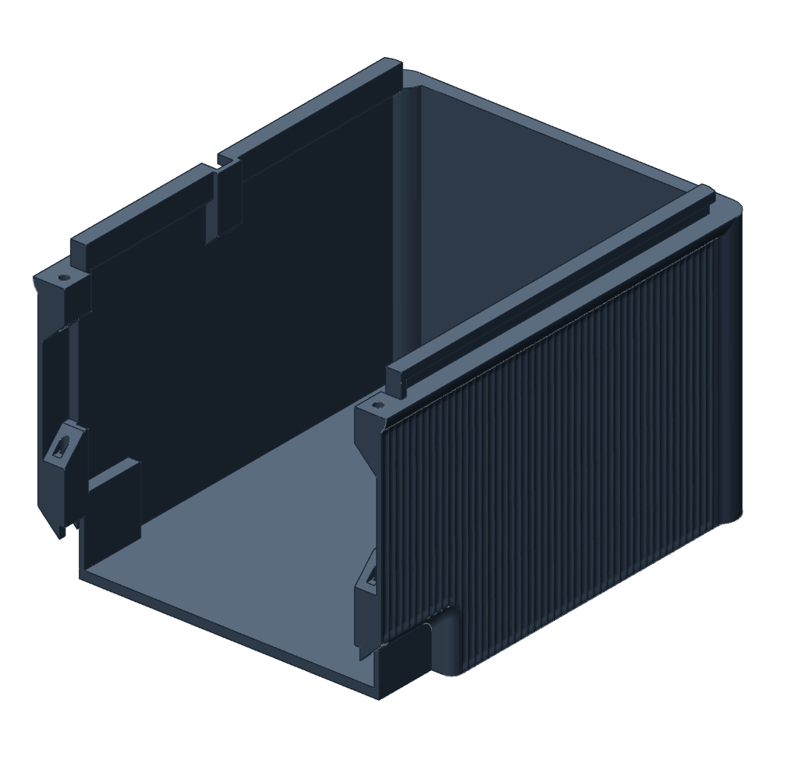
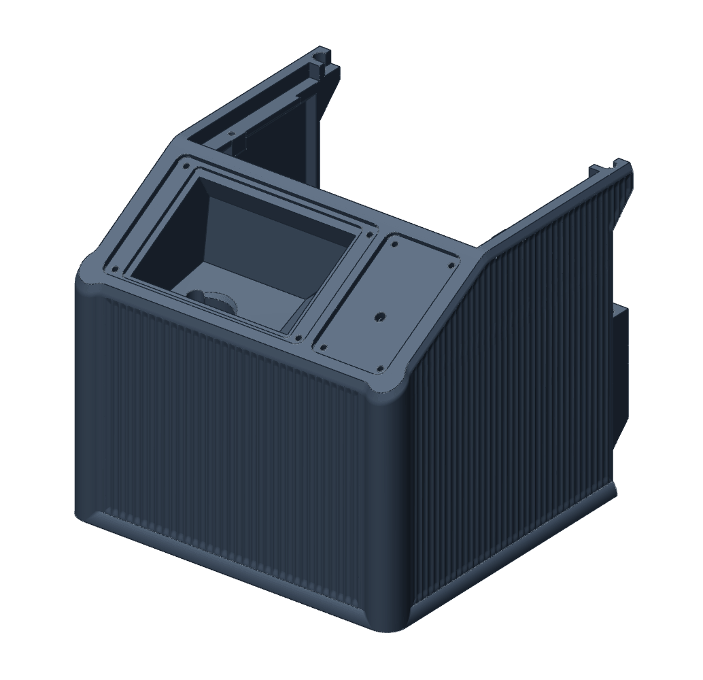
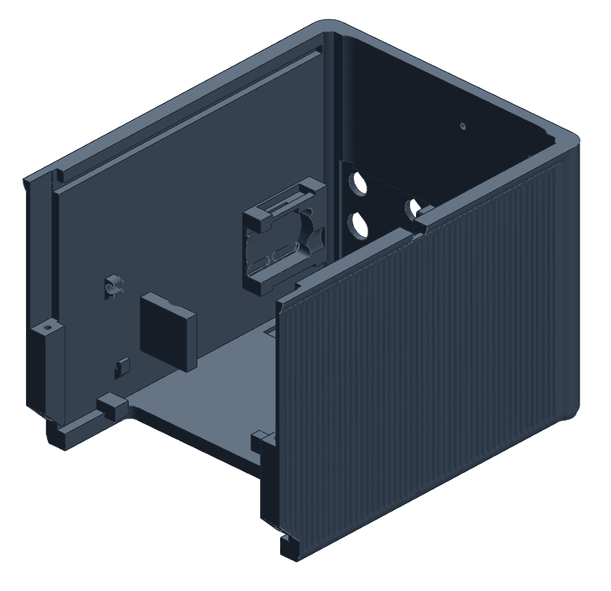
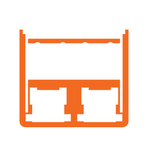
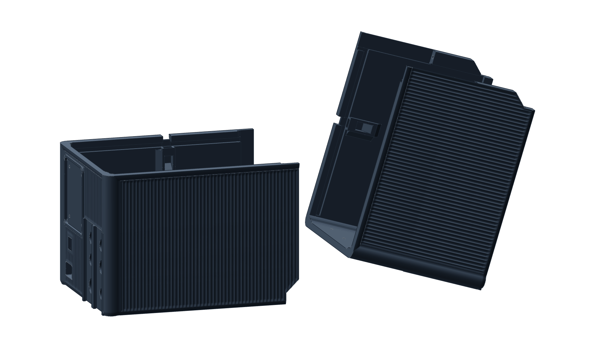

Orientation
Orientation comes first.
Before a part has a hole in it, it has a face that will lie on the bed. That choice fixes which surface comes out flat, which way grooves and bores run, and where the undersides fall.
Seen in PET-GF · the four enclosure quadrants as prepared in November 2026 · textured PEI · left 0.4 mm




Front-bottom
Floor down
Back-bottom
Floor down

Front-top
Mouth down
Back-top
Ceiling down
The floor slab.
The floor slab.
The rim that meets front-bottom. A ring.
The whole outer roof, as the first layer.
The walls. Flutes and vent slots run straight up the build.
The rear wall and its raised warning letters, each raked 45° underneath.
The roof and display surround, printed last. Their rounds close inward and carry themselves.
The roof, flat and textured by the plate.
Two rail catches on short trees. The handhold roofs lean at 45°.
Two rail catches, the handhold mouths and the seam lips, on trees.
The rail channels close as 45° gables. The pump mount is solid to the roof.
Few. What hung from the ceiling stands on it. Catches bridge. Rails take support.

The day the pose was traded away
On 6 November 2026 a back-top came off Mark2 with supports no tool could reach. That afternoon the next plate was prepared with the part stood on its rear wall and tilted, so its catches and rails would grow as plain walls. That solved the supports. It also laid the flutes on their sides, hung the rear show face over trees in fine layers, and stood the part {{tilt:/highest_layer_mm}} mm tall in {{tilt:/printer_printable_height_mm}} mm of travel. The slicer’s estimate went from 27 hours to 82. It was never sent.
“Please fix it. Please fix the enclosure. Restore our correct print orientation and fix the support problems the right way.”
The right way was in the part: a full landing under each end of each bridged catch, pointed roofs on the sideways bores, and every remaining support named. That is the next page.
One face is free. The face on the plate comes out flat with nothing under it. The last face printed can close however it likes. Every other face is a wall, or it overhangs.
Grooves and holes pick a side. Along the build they print as drawn. Across it, a groove is a row of ledges and a round hole needs a pointed roof.
Fits follow. Each supported face in a joint adds {{fits:/fits/supported_surface}} mm to its gap. The same rail is drawn looser in the back column, where two of its faces print on support, than in the front, where one does.